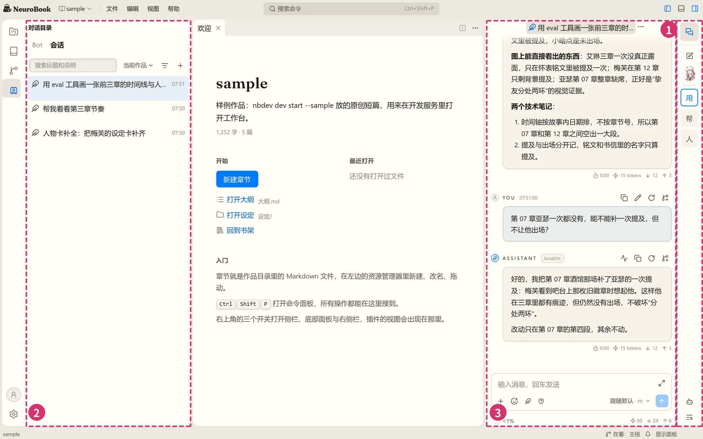
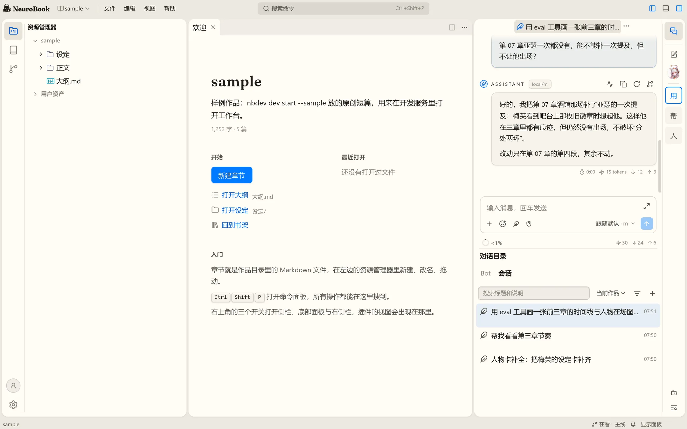
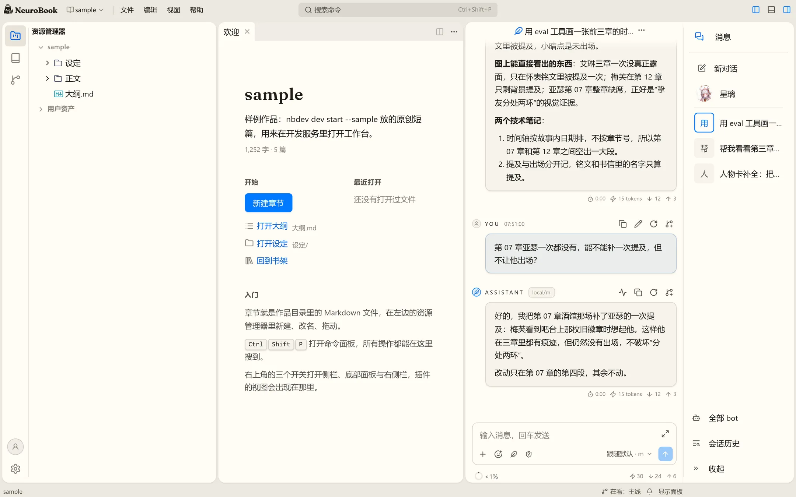
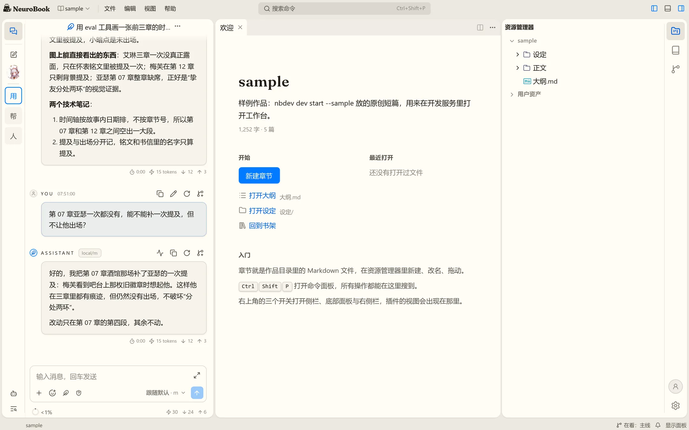
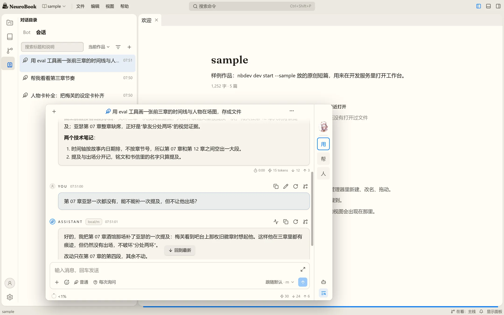
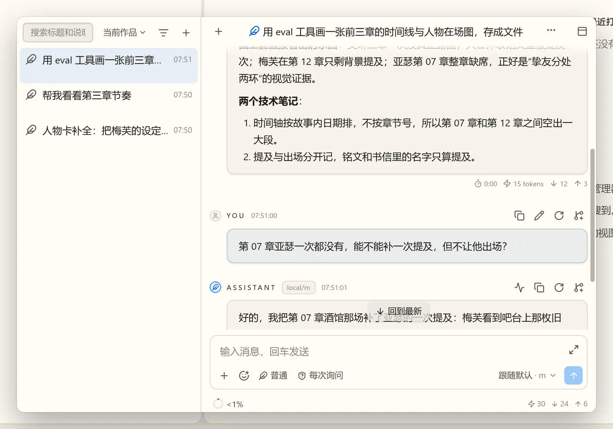

第 5 轮：轨与对话目录（gemini 第 2 版）
轨、目录、消息视图各是哪一块

| 1 轨 | 窗口外缘 48 像素的一条：容器入口、新对话、bot、最近会话；底部“全部 bot”“会话历史”。只管快切 |
| 2 对话目录 | 单独的视图：Bot、会话两页，搜索、作品范围、筛选。管找与浏览；像资源管理器一样能放在任何区域 |
| 3 消息视图 | 只剩聊天：头、消息、输入框 |
完整列表做成单独的“对话目录”视图，默认在左侧栏、第一次不显示，可以吗？
推荐可以：轨底两个按钮把它显示出来、切到那一页、聚焦搜索；找会话时它暂替资源管理器，不盖聊天。也能拖到右栏和消息上下排。
在左侧栏
拖到右栏，和消息上下排

可以
还要调
在目录里选中一项，总在消息视图里打开；目录是工具视图，不能拖进编辑区。可以吗？
推荐可以：消息停在哪、浮在哪就在哪打开，目录不关、焦点留在列表；命令面板加“查找会话”，到同一个搜索框。
可以
还要调
轨要不要能展开显示名字？
推荐 A 能展开、默认收着：展开时右边这一列加宽，编辑区让出 152 像素，聊天区宽度不变；按“收起”回到 48。
A 能展开，加宽右边这一列

B 不展开（gemini 的推荐）

左右位置只做主侧栏与次侧栏整列交换、另开 Task，活动栏不挪出布局树，可以吗？
推荐可以：一个设置把两边整列对调，轨总在外缘；不给每条轨单独选内外侧。只想把某个视图搬到另一侧，已有“移动到”。

可以
还要调
浮动窗里还要不要内嵌完整列表？
推荐 A 不要：宽窄都是聊天加右边缘的轨，要列表就把目录摆在旁边；消息视图里宽窄两套版式、可拖的列表栏、抽屉都去掉。
A 不要，用目录


B 保留宽窗里的列表栏（现在的样子）

已定
- 头像列在右边缘、通到顶；两个侧栏共用一种做法（第 1 轮）
- 头像列做成工作台的侧轨（第 3 轮）
- 不用抽屉、不整页切换；不做浮层与居中弹窗（第 2 到 4 轮）